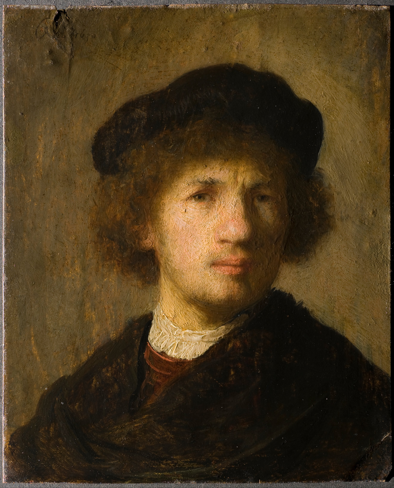
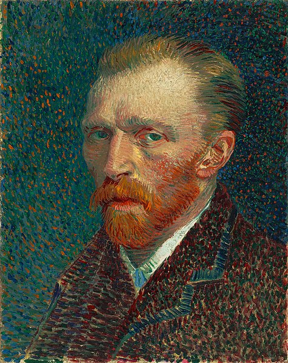
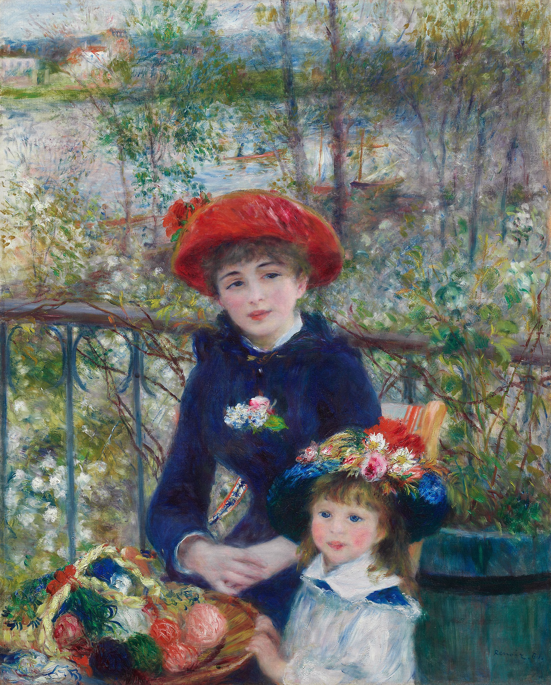

New gallery

1631
Old Man with a Gold Chain
This evocative character study is an early example of a type of subject that preoccupied the great Dutch master Rembrandt van Rijn throughout his long career. Although his large output included landscapes, genre paintings, and the occasional still life.

1887
Self-portrait
In 1886 Vincent van Gogh left his native Holland and settled in Paris, where his beloved brother Theo was a dealer in paintings. Van Gogh created at least twenty-four self-portraits during his two-year stay in the energetic French capital.

1881
Two Sisters (On the Terrace)
“He loves everything that is joyous, brilliant, and consoling in life,” an anonymous interviewer once wrote about Pierre-Auguste Renoir. This may explain why Two Sisters (On the Terrace) is one of the most popular paintings in the Art Institute.